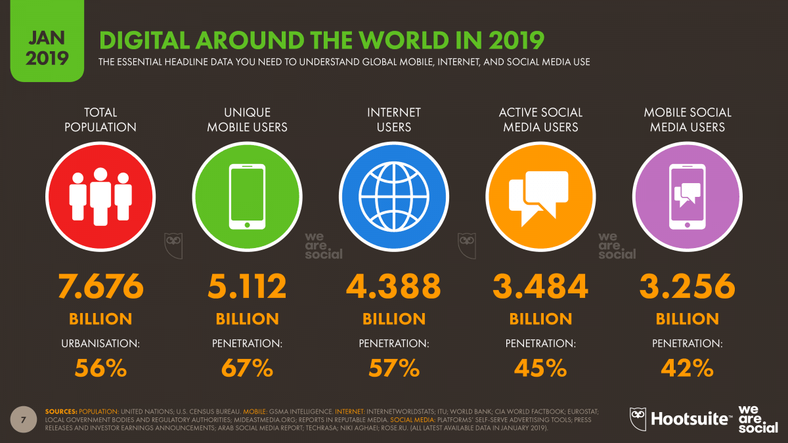
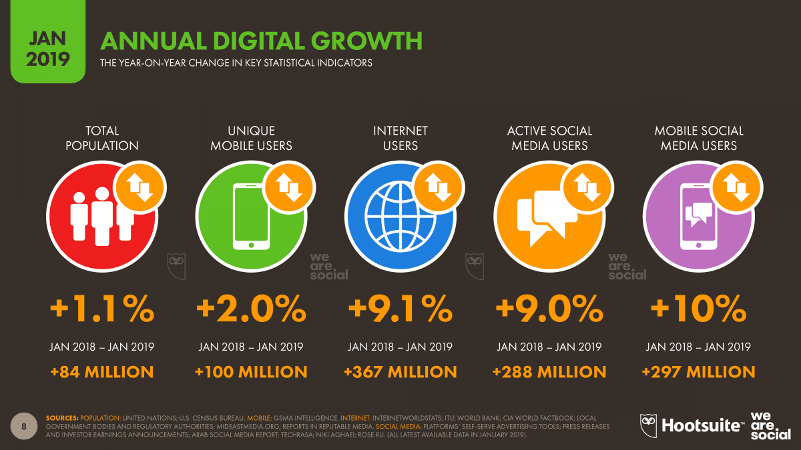
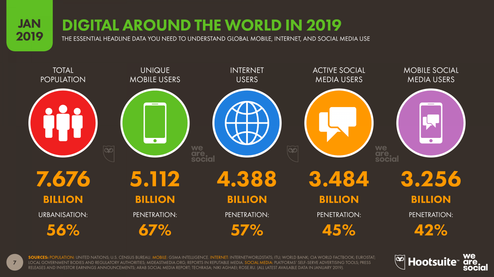
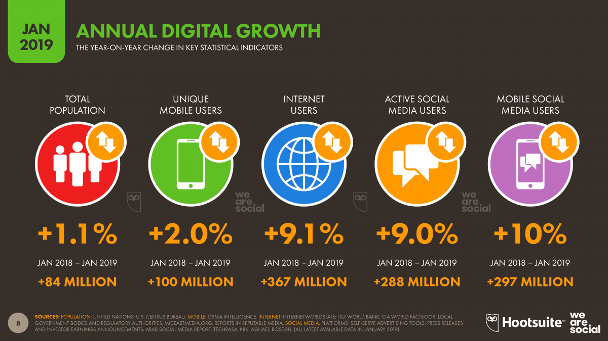

Ethics and information.
When the normal human behavior is mapped and influenced by how algorithms learn and predict things, then questions around our personal freedom are raised. Probability analysis is therefore an interesting topic when the discourses of big data and digital footprint analytics are mentioned.
Data algorithms are engineered to profile, analyse, and further make decisions based on that which they have learnt. This makes them “creations “that make decision and continue to learn based on those decisions. (Janssens, 2016) argues that the internet of things and the concept of hyperconnectivity ushers in the othering in the human world. In his argument about racial and ethnical representation of people that are different from the majority population, (Hall 1997: 228) states that images represent those people by ‘saying something’ about ‘otherness’ and ‘difference’. Difference in this case is signifier of racial, ethnical, and cultural belongingness.
In the digital space however, algorithms create data races and cultures based on digital footprints, the digital divide, and digital vernaculars. By splitting the abnormal and unacceptable from the normal and acceptable, stereotyping excludes and expels those that do not fit as participants of a ‘preferred’ society. Digital vernacular is the process whereby we engage with digital media as a means of creating and absorbing content that we deem relevant to our daily lives. It forms part of our understanding of the world around us using digital devices. Borrowing from Burgess’s work on digital storytelling, the concept of digital vernacular can be loosely defined as the way we engage with others within a digital space, and how we use digital tools to best communicate this vernacular. This digital vernacular is embedded in our everyday lives through our day-to-day use of digital media (memes, the internet, etc.)
Combining the concept of digital vernacular and the power of algorithms behind them, a conclusion about what we potentially want to do when we visit a website for example can be drawn. (Kemp, 2019) draws some interesting statistics about internet penetrations and the comparison of data and social media usage around the world. If algorithms have the power to effectively map data geographies as illustrated by kemp, what they can then do and further learn from this data should therefore not go unchecked.



According to (Janssens, 2016), when it comes to big data and all the streams of data that is collected by devices every time, ethics questions are rarely of even hardly asked. However, Jeff Orlowski's The Social Dilemma and Shalini Kantayya's Coded Bias, a complementary pair of movies that do terrifying deep-dives into surveillance capitalism are beginning to shed some light into what is really going on behind the scenes, and how the teams responsible for these algorithms knowingly disregard ethics issues. Coded Bias is a new film that looks at fight against racial biases which are baked in facial recognition & AI technology. The argument of the film is based on evidence that most facial recognition software does not recognize darker skin. Yet, the same people are recognized when they wear a lighter shaded mask.
(Janssens, 2016) also raises these questions by asking “is the user of this is profiled data could ever get a chance to correct the algorithm or do the programmers put ethics and consequences into considerations?”
References
Burgess, J., 2006. Hearing Ordinary Voices: Cultural Studies, Vernacular Creativity and Digital Storytelling. Continuum, 20(2), pp.201-214.
“Coded Bias”: New Film Looks at Fight Against Racial Bias in Facial Recognition & AI Technology (no date) Democracy Now! Available at: https://www.democracynow.org/2020/1/30/coded_bias_shalini_kantayya_joy_buolamwini (Accessed: 19 September 2020).
Hall, S., 1997. The spectacle of “the Other”: Cultural Representation and Signifying Practices. London: Sage.
Janssens, L., 2016. Freedom and Data Profiling. Editor: Liisa Janssens Language editor: Floor Soesbergen Design: Bob van Dijk, Petra Huijgens, Thiërry Tetenburg Print: Akxifo, Poeldijk, p.18.
Kemp, S. (2019) Digital trends 2019: Every single stat you need to know about the internet, The Next Web. Available at: https://thenextweb.com/contributors/2019/01/30/digital-trends-2019-every-single-stat-you-need-to-know-about-the-internet/ (Accessed: 18 September 2020).

